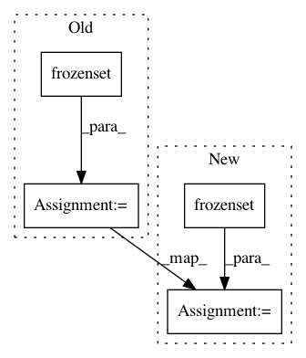

559ba6c9343e3061b2d433aab3c86c63483bd404,descarteslabs/client/services/service/service.py,ThirdPartyService,ThirdPartyService_1,#,227
Before Change
class ThirdPartyService(object):
TIMEOUT = (9.5, 30)
RETRY_CONFIG = Retry(
total=10,
read=2,
backoff_factor=random.uniform(1, 3),
method_whitelist=frozenset(
["HEAD", "TRACE", "GET", "POST", "PUT", "OPTIONS", "DELETE"]
),
status_forcelist=[429, 500, 502, 503, 504],
)
ADAPTER = ThreadLocalWrapper(
lambda: HTTPAdapter(max_retries=ThirdPartyService.RETRY_CONFIG)
)
After Change
READ_TIMEOUT = 30
TIMEOUT = (CONNECT_TIMEOUT, READ_TIMEOUT)
RETRY_CONFIG = Retry(
total=10,
read=2,
backoff_factor=random.uniform(1, 3),
method_whitelist=frozenset(
[
HttpRequestMethod.HEAD,
HttpRequestMethod.TRACE,
HttpRequestMethod.GET,
HttpRequestMethod.POST,
HttpRequestMethod.PUT,
HttpRequestMethod.OPTIONS,
HttpRequestMethod.DELETE,
]
),
status_forcelist=[
HttpStatusCode.TooManyRequests,
HttpStatusCode.InternalServerError,
HttpStatusCode.BadGateway,
HttpStatusCode.ServiceUnavailable,
HttpStatusCode.GatewayTimeout,
],
)
ADAPTER = ThreadLocalWrapper(
lambda: HTTPAdapter(max_retries=ThirdPartyService.RETRY_CONFIG)
)
In pattern: SUPERPATTERN
Frequency: 3
Non-data size: 4
Instances
Project Name: descarteslabs/descarteslabs-python
Commit Name: 559ba6c9343e3061b2d433aab3c86c63483bd404
Time: 2020-01-15
Author: jaap@descarteslabs.com
File Name: descarteslabs/client/services/service/service.py
Class Name: ThirdPartyService
Method Name: ThirdPartyService_1
Project Name: miso-belica/sumy
Commit Name: 6e545e41f1190c70462419d163390c291ee1ec55
Time: 2013-02-28
Author: miso.belica@gmail.com
File Name: sumy/algorithms/_luhn.py
Class Name: LuhnMethod
Method Name: stop_words
Project Name: descarteslabs/descarteslabs-python
Commit Name: 559ba6c9343e3061b2d433aab3c86c63483bd404
Time: 2020-01-15
Author: jaap@descarteslabs.com
File Name: descarteslabs/client/services/service/service.py
Class Name: Service
Method Name: Service_1